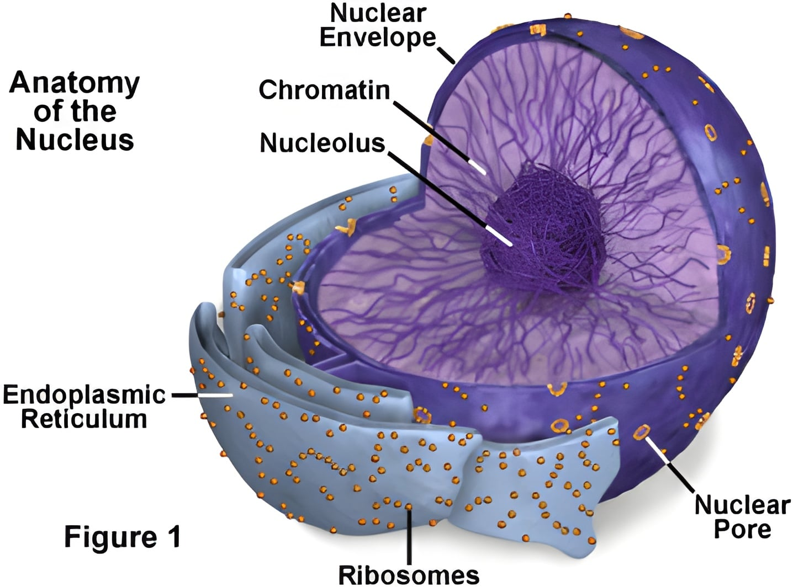

5–10 µm
Nucleus
The nucleus is a membrane-bound organelle that stores genetic material (DNA) and acts as the control center of the cell.
- Surrounded by a double membrane called the nuclear envelope
- Contains nucleolus for rRNA synthesis
- Absent in prokaryotes and mammalian RBCs